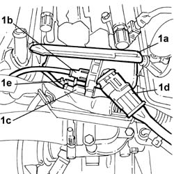
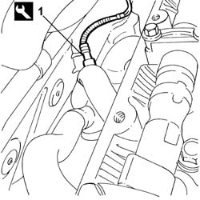

1080B93 RIGHT LAMBDA SENSOR - R.R.
- Path
- Procedures > 10 ENGINE > 1080 EMISSION CONTROL SYSTEM > 1080B EXHAUST EMISSION CONTROL SYSTEM > 1080B93 RIGHT LAMBDA SENSOR - R.R.
- Kind
- repair procedure (removal / refitting; the operation number is the code)
- Applies to
- engines: 3.0 V6, 3.2 V6; all production periods
- Interactive page
- https://sloeber94.github.io/elrnDB-lThss/en/#/187482
Applies to: engines: 3.0 V6, 3.2 V6; all production periods
 Removing
Removing
 Refitting
RefittingSee in Op. 1016A34 Right TAPPET COVER - R.R. and Replace gasket
1. Open the container (1a) cover and disconnect the connector (1b).
 | Description | Connector |
|---|---|---|
1b | Lambda sensor on catalyzer | K017 |

Applies to: engines: 3.0 V6, 3.2 V6; all production periods
1. Using the USAG 875 spanner or an equivalent tool, undo the Lambda sensor and remove it complete with wiring.
| Description | Connector |
|---|---|---|
1 | Lambda sensor on catalyzer | K017 |

Applies to: engines: 3.0 V6, 3.2 V6; all production periods
Refitting
Removing- Position the Lambda sensor and tighten it to the recommended torque.
| Description | Connector |
|---|---|---|
. | Lambda sensor on catalyzer | K017 |
 | Value - daNm | Fastening | Component | Ø |
|---|---|---|---|---|
. | 5.8 | Connector | LAMBDA PROBE (ONE) | M18 X 1.5 |
- Connect the connector for the Lambda sensor and close the protective cover.
See in Op. 1016A34 Right TAPPET COVER - R.R. and Replace gasket